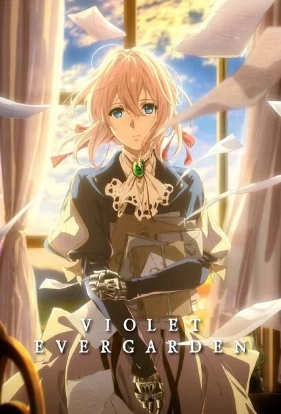

رحلة البحث عن معنى "أنا أحبك" من خلال عدسة الفلسفة

الفيلسوف: يقول كانت: "عامل البشر كغاية في ذاتهم، لا كوسيلة".
الربط: فايوليت كانت "وسيلة" (سلاح) في الحرب، لكن رحلتها كدمية ذكريات هي تجسيد لفلسفة كانت، حيث بدأت تعامل نفسها والآخرين كبشر لهم قيمة وكرامة.
الفيلسوف: يرى هايدغر أننا نفهم وجودنا من خلال اللغة.
الربط: فايوليت لم تكن تفهم وجودها إلا عندما بدأت تتعلم معاني الكلمات. اللغة كانت هي "المسكن" الذي أعاد بناء مشاعرها المفقودة وفهم معنى الحب.
الفيلسوف: يرى أرسطو أن الفن يساعد الإنسان على التخلص من المشاعر المكبوتة.
الربط: تمثل فايوليت هذا المفهوم؛ فمن خلال كتابة الرسائل للآخرين، قامت بتطهير روحها من ذنب الحرب، وتحولت من "أداة" إلى إنسان يشعر.